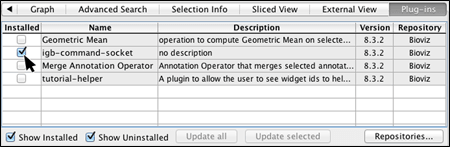

Everything you need in a genome browser
The Integrated Genome Browser (IGB) is an open-source tool for visualizing genome-scale datasets.
IGB is designed for both biologists and bioinformaticians, and is used by thousands of researchers
at hundreds of universities around the world. Find out how IGB can help push your research forward with its many features,
ease of use, and wealth of support documentation.
Need help getting started with IGB? Contact us for help or to schedule a tutorial.
Display your own data
View data from aligned sequences, annotations, and more (BAM, BED, GFF3). Overlap multiple datasets and customize each track's color. Or make a heatmap of the data.
{kind=link}
{kind=link}
{kind=link}
View and interact
Fly through your data using IGB's fast, animated zooming and rapid panning. Interact with your data by selecting or right-clicking features.
Load any genome
IGB provides access to many genomes from UCSC and other sites via the main IGB Quickload site. You can also view your own custom genomes.
{kind=link}
Find more with BLAST and Google
Use IGB’s right-click search to BLAST a feature. Find more by using Web Search via Google, or other model-specific search tools as LinkOuts.

Make and view graphs
Make, customize, and save graphs from your data. Use depth graphs to show coverage, or mismatch graphs to count differences between your data and a reference. IGB can view many graph types, including BEDGRAPH and Wiggle.
{kind=link}

{kind=link}
Advanced Features
Share data
Build an IGB QuickLoad to share data between collaborators. Store data in Dropbox to provide cloud-based access to everyone involved in the project. Or share analysis results using Bookmarks.
{kind=link}
{kind=link}
Develop and enable Plug-ins
Select and install Plug-ins to add additional functionality. You can also make your own plug-ins and share them with the IGB community.
{kind=link}
{kind=link}
More Information
For more information about IGB capabilities, visit the IGB User's Guide or the IGB Developer's Guide.